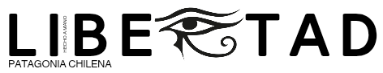
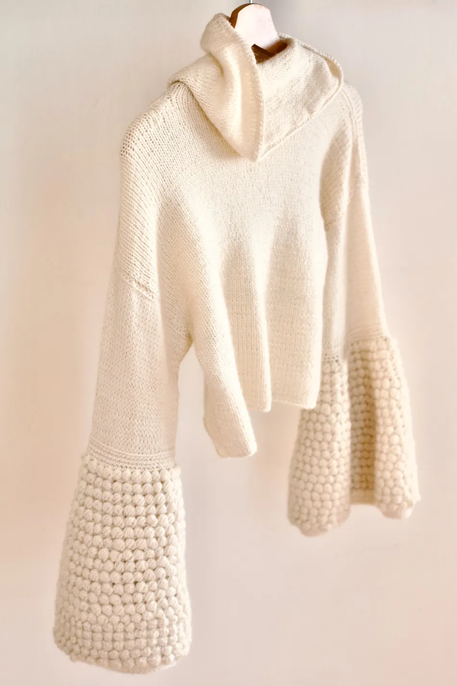
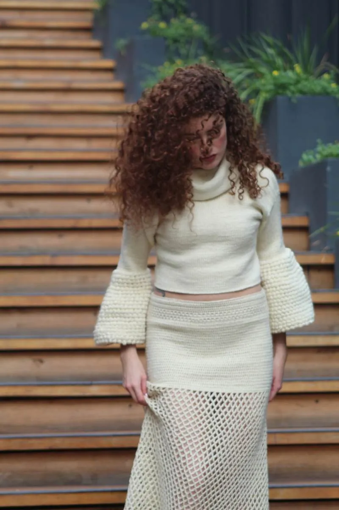
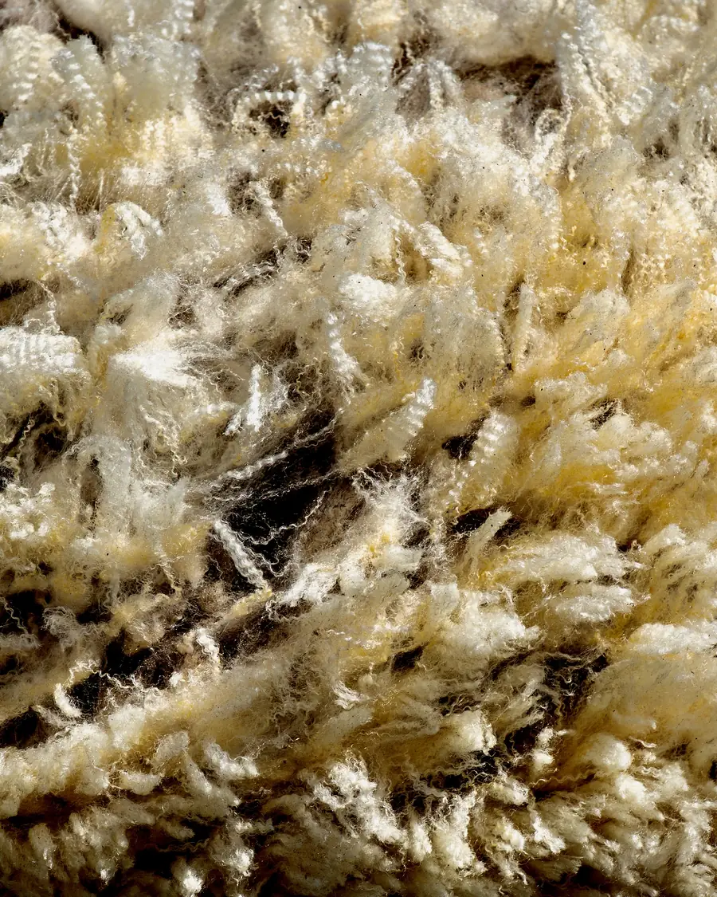

Carola and her mother Yves design one-of-a-kind pieces, born in Chilean Patagonia. Raw wool as a base, worked in crochet or with needles, with natural-dye details on some pieces.

PIECE NO. 1 · «GLACIAR INFINITO»
Undyed raw wool

PIECE NO. 2 · «MONTAÑA LIBRE»
Undyed raw wool, sleeves with natural dyes

Traceability
Each piece starts from raw wool from ranches in the Aysén Region — white or cream, the animal's natural color, undyed and untreated, from a Mapuche spinner in Coyhaique. Some pieces also feature details in natural dyes, such as nalca or calafate.
It is the raw material in its simplest state: the base on which the rest of the collection is later built.
Interested in this piece or a similar commission?
Ask about availability